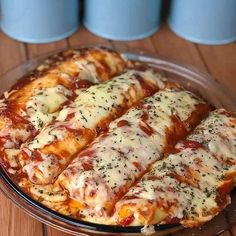

Panquecas

Ingredientes:
- 1 lata de Creme de Leite sem soro;
- Uma lata de Milho em conserva;
- 1 copo de Requeijão;
- 100 gramas de Azeitona verde;
- 1 cebola média picada;
- 400 gramas de Peito de Frango desfiado;
- 200 gramas de Mussarela;
- 100 gramas de Batata palha;
- Uma xícara (chá) de Água;
- Tempero pronto;
- Azeite;
- Sal a gosto.
Passo a Passo:
- Em uma liquidificador, bata o milho, o requeijão, o creme de leite e a água até obter um creme consistente. Reserve. Em seguida, em uma panela, adicione um fio de azeite e refogue a cebola. Adicione as azeitonas e na sequência coloque o creme reservado e o frango desfiado.
- Assim, mexa misture tudo e cozinhe até obter uma textura espessa. Dessa forma, experimente e corrija o sal, caso necessário. Depois de pronto, coloque o refogado em uma assadeira, cubra com mussarela leve ao forno até borbulhar e dourar por cima.
- Se quiser adicione a batata palha nesse momento e por cima, polvilhe o queijo parmesão ralado. Por fim, retire do forno e sirva em seguida acompanhando de um arroz branco bem soltinho e bastante batata palha. Bom apetite!